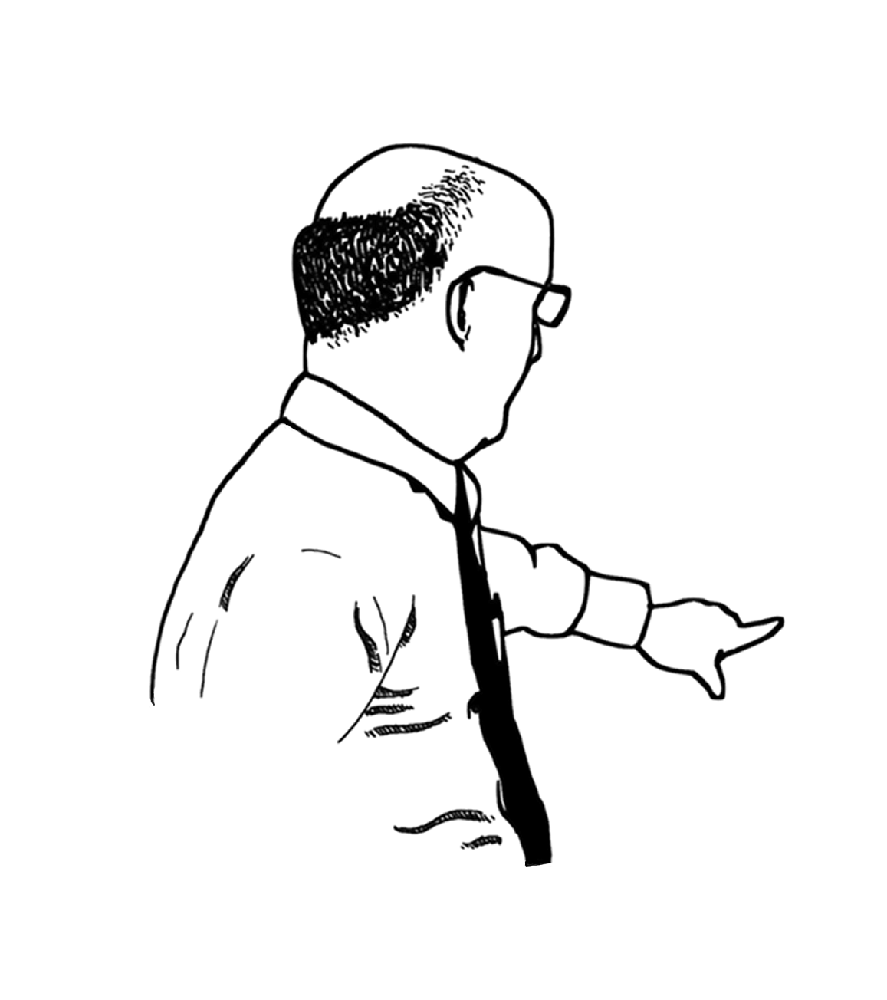

My Website
My Projects
For a lab report I had in Circuit Analysis, I had to design an Op AMP based circuit that would
convert a 2 Vpp 350 Hz Square wave (Vin) into a 4 Vpp 350 Hz Sine Wave (Vout) that is in phase with
the square wave. I was able to design a board in UltiBoard and solder it when it arrived, but
unfortunetly my waves weren't in phase with one another.
Over the summer I had an internship
with UST's Windows team. I spent a lot of time installing
devices around campus, setting up classrooms, and reimaging machines.